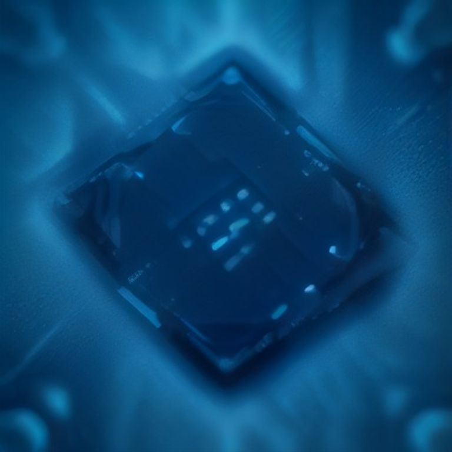
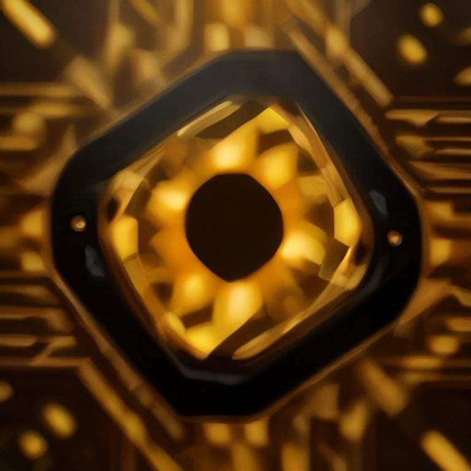

M5, M6, Ultra, Neural Engine — le jargon traduit en langage client. Faites glisser, regardez, conseillez.
Défiler
Puces Apple
M5 · M6 · Ultra — Édition 2026
01 — L'essentiel
Une phrase de 30 secondes, à sortir en boutique
« Une puce Apple, c'est une équipe complète dans un seul petit bâtiment : des polyvalents qui réfléchissent, des artistes qui dessinent, et un spécialiste IA. La seule vraie question : qu'est-ce que vous faites avec votre Mac ? »
Chaque nouvelle génération (M1 → M6) ne rend pas l'ancienne obsolète : elle rend la machine plus rapide, plus économe et plus douée pour l'IA. Le bon choix dépend de l'usage, pas du numéro.
02 — Le jargon
Chaque terme → son équivalent du quotidien
Faites glisser — 7 cartes, une par concept.
CPU · cœurs
Les polyvalents
Ouvrir une app, afficher une page, compresser un fichier. Les cœurs « super » sont les chefs ultra-rapides ; les cœurs « efficience » gèrent le quotidien sans vider la batterie.
M5 : 10 cœurs · M6 : 12 cœurs
GPU · graphismes
La brigade des images
Elle répète le même geste des millions de fois : afficher chaque pixel, calculer chaque image d'un jeu ou d'un montage. Les gros chantiers visuels, c'est elle.
M6 : accélérateur IA par cœur
NPU · Neural Engine
Le spécialiste IA
Son seul métier : reconnaître et comprendre — un visage, une dictée, une traduction. Très vite, sans fatiguer la batterie, et tout reste sur l'appareil.
38 000 milliards d'opérations/seconde
Unified Memory · RAM
Une seule grande table
Toute l'équipe pioche les mêmes dossiers sans faire de photocopies. C'est pourquoi un Mac « seulement » 32 Go va aussi vite qu'un PC avec davantage.
Jusqu'à 512 Go sur Mac Studio
GB/s · TB/s
La largeur du couloir
La bande passante entre l'équipe et la grande table. Couloir large = personne n'attend. Le facteur caché pour l'IA et la 8K.
M5 Ultra : 1,2 To/s — 8× un MacBook Air
Process · N2
2 nanomètres
Plus c'est petit, plus on range de composants au même endroit — et moins ça consomme. Le M6 est la première puce Apple gravée en 2 nm.
Concrètement : une batterie qui dure plus longtemps
Fusion · Quad-die
UltraFusion
Plusieurs puces soudées qui travaillent comme une seule. Le M5 Ultra, c'est 4 puces M5 Max qui ne font qu'un — le logiciel ne voit qu'une seule machine.
UltraFusion 2 : 4,4 To/s entre puces
01 / 07
03 — Les chiffres qui marquent
Trois nombres à retenir en clientèle
0nm
gravure du M6 — première puce Apple en 2 nm
0,0To/s
de bande passante sur M5 Ultra (×1,5 vs M3 Ultra)
0×
calcul IA du M5 Ultra face au M3 Ultra
« Il n'y a pas de meilleure puce, il y a la puce dimensionnée pour votre usage. La bonne question : qu'est-ce qui vous frustrerait — que ce soit lent, ou que vous payiez pour de la puissance qui dort ? »
Sources : Apple Newsroom (25 août 2026), fiches techniques Apple. Chiffres constructeur — document d'aide à la vente, non contractuel.
Le comparatif · M5 vers M6
M5 vs M6
M6 annoncé le 25 août 2026 — premier 2 nm d'Apple.

3 nm — l'espace est un luxe : blocs clairsemés, bleu froid

2 nm — la même surface, 81 blocs : la densité comme richesse
Critère
M5
M6
CPU (polyvalents)
10 cœurs (4 super + 6 efficience)
12 cœurs (2 super + 4 perf + 6 efficience)
GPU (images)
8 ou 10 cœurs
12 cœurs, accélérateur IA par cœur
Neural Engine (IA)
16 cœurs
Double 16 cœurs — IA ×2
Couloir mémoire
153 Go/s
170 Go/s
Gravure
3 nm
2 nm — 1ʳᵉ puce Apple
Mémoire max
32 Go
32 Go
Machine
MacBook Pro, iPad Pro, Air, Vision Pro
Mac mini
💬 En boutique : « Non, le M6 n'est pas deux fois mieux. En usage courant c'est 15 à 30 % de plus. Le vrai saut, c'est l'IA (×2) et la consommation. Vous le sentirez sur la batterie et Siri, pas sur Mail. »
Le comparatif · Workstation
M3 Ultra vs M5 Ultra
La super-team de 2025 face au premier quad-die d'Apple (Mac Studio, dès 5 499 $).
Critère
M3 Ultra
M5 Ultra
Architecture
2 dies via UltraFusion
4 dies (2× M5 Max) — 1ʳᵉ quad-die Apple
CPU
28/32 cœurs
30/36 cœurs
GPU
60/80 cœurs
64/80 cœurs + accélérateur IA
Couloir mémoire
819 Go/s
1,2 To/s (+50 %)
UltraFusion
—
UltraFusion 2 : 4,4 To/s, densité ×6
Calcul IA (GPU)
—
×4,5 vs M3 Ultra
💬 En boutique : « Le M5 Ultra, c'est le camion de chantier : 8K, 3D lourde, IA géantes hébergées dans la machine. Pour du Excel + Safari + photos, ce serait payer pour un couloir vide — le M6 ou le M5 Max suffisent. »
Assistant de recommandation
Quelle puce pour quel usage ?
4 questions posées au client, une recommandation en sortie.
1Que fait principalement le client avec son Mac ?
2Utilise-t-il l'IA au quotidien ?
3L'autonomie est-elle un critère ?
4Quel budget approximatif ?
FAQ
Les vraies questions du Genius Bar
« Le M6, c'est deux fois mieux que le M5 ? »
Non — en usage courant, environ 15 à 30 % plus rapide. Le vrai saut du M6 : l'IA (×2) et l'efficacité (2 nm). Le client le sentira sur la batterie et Siri, pas sur Mail.
« C'est quoi, le Neural Engine, concrètement ? »
Le spécialiste IA de la puce. C'est ce qui fait que Siri répond vite, que les photos se trient toutes seules, que la dictée marche sans internet.
« L'Ultra, ça vaut le coup pour moi ? »
Seulement pour du montage 8K, de la 3D ou de l'IA sur la machine. Pour du Excel + Safari + photos, c'est payer pour un couloir vide. Recommander M6 ou M5 Max.
« Pourquoi 512 Go de mémoire dans un Mac Studio ? »
Pour faire tenir un cerveau IA entier dans la machine. Un gros modèle d'IA, c'est un dictionnaire géant : s'il tient sur la table (la mémoire), on consulte tout de suite.
« Ma puce M1 est-elle dépassée ? »
Non. Pour du bureautique et du web, un M1 reste excellent en 2026. On change de puce quand un besoin précis n'est plus couvert : autonomie, IA, gros montages — pas par principe.
Keynote du 9 septembre 2026 — « Surprise and Shine »
Les annonces, en direct d'Apple Park
Première keynote de John Ternus comme CEO. 5 produits — et iOS 27 le 14 septembre.
01 · ONE MORE THING
iPhone Duo
Le premier iPhone pliable.
Format passeport à plat. L'écran interne gagne 50 % de surface, le externe garde 90 % de celle de l'iPhone 18 Pro.
7,6″ + 5,4″écrans interne + externe
A20 Pro+ vapor chamber
31 hde vidéo 1
1 999 $à partir de
Face à l'iPhone Air
Écrans : 7,6″ interne + 5,4″ externe, même ratio, 3 000 nits vs 6,5″ unique
Touch ID latéral, Camera Control + Siri Camera, FaceTime sous l'écran nouveautés inédites
Autonomie double batterie 31 h vs 27 h1
Céramique 3× plus résistante aux rayures, titane grade 5, IP68 Ceramic Shield 2
Prix 1 999 $ vs 999 $
💬 En boutique : produit 100 % nouveau — zéro historique de pannes, pièces absentes des flux les premières semaines. Touch ID latéral, nanotexture et double batterie = diagnostics inédits. Ne promettre aucun délai avant les guides officiels Apple.
02
iPhone 18 Pro · 18 Pro Max
L'ouverture variable arrive.
Première Apple : un capteur 48 Mpx à ouverture variable, avec Pro Controls. Siri IA sur 300 000+ apps. Pas d'iPhone 18 standard — reporté au printemps 2027.
A20« énorme gain »
48 Mpxouverture variable
36 h / 45 hde vidéo 1
+100 $1 199 / 1 299 $
Face aux 17 Pro / Pro Max
Caméra : ouverture variable (1ʳᵉ Apple) vs ouverture fixe
Vidéo 36 h / 45 h vs 33 h / 39 h1
Dynamic Island 3 live activities · 2 To inédit sur Pro Max nouveautés
« Apple Reference Image » anti-IA indisponible UE au lancement
💬 En boutique : 45 h = moins d'échanges batterie la 1ʳᵉ année ; ouverture variable = nouvelle mécanique photo au diagnostic. France : prix EUR non communiqués à J+0 — tablez ~+100 € vs la grille 17 Pro (1 329 € / 1 479 €) et vérifiez apple.com/fr.
03
AirPods 5
L'ANC descend en gamme.
Première fois que la réduction de bruit quitte le haut de gamme : −50 % de bruit en plus, boîtiers plus durables.
129 $4 h ANC / 20 h boîtier
149 $volume sur tige · boîtier sans fil
−50 %de bruit en plus 4
18 sept.disponibilité
Face aux AirPods 4
ANC dès 129 $ vs réservé au modèle 179 $
Réduction de bruit −50 % en plus4
💬 En boutique : l'ANC en entrée de gamme réduit l'upsell vers AirPods Pro. Réparation = remplacement simple ; garantie légale 2 ans (vendeur) inchangée.
04
Apple Watch Series 12
Le capteur qui compte 5 fois par seconde.
FC mesurée toutes les 5 s, VFC jusqu'à toutes les 5 min. Siri Recap et Audio Intelligence arrivent sur la montre. App Santé repensée, onglet « Longevity ».
5 sfréquence cardiaque 2
24 hautonomie (stable) 1
399 $céramique 899 $
18 sept.disponibilité
Face à la Series 11
Capteur FC 5 s vs standard
Siri Recap + Audio Intelligence nouveau
Autonomie / prix 24 h / 399 $ — inchangés
⚠︎ Nécessite un iPhone 11 (ou modèle ultérieur) avec iOS 27 ou version ultérieure.
💬 En boutique : le saut est capteur + IA, pas prix/autonomie. Questions vie privée attendues au comptoir (où vit l'audio, comment désactiver).
04 · ULTRA
Apple Watch Ultra 4
Deux jours. Un record Apple.
Siri Recap + Audio Intelligence, autonomie « plus de deux jours » — un record pour la montre d'aventure.
>48 hautonomie 3
799 $prix stable
18 sept.disponibilité
💬 En boutique : nouveautés surtout logicielles — pensez watchOS au comptoir ; autonomie 2 jours = l'argument d'aventure.
05 · LOGICIEL
iOS 27
Le 14 septembre, 4 jours avant la mise en vente.
Siri AI en bêta (anglais), opacité Liquid Glass réglable, nouvelles icônes, widgets extra-larges.
💬 En boutique : une mise à jour massive juste avant l'afflux des précommandes — à anticiper au comptoir.
12 sept. précommandes 18 Pro14 sept. iOS 2716 sept. précommandes Duo18 sept. 18 Pro · AirPods 5 · Watches23 oct. iPhone Duo en magasin
Notes de bas de page — conditions officielles des chiffres
1Par rapport aux modèles de génération précédente. L'autonomie varie en fonction de l'utilisation.
2D'après les données d'une étude menée par Apple en juillet et août 2026 sur la précision de la mesure de la fréquence cardiaque, en se basant sur les objets connectés les plus vendus disponibles sur le marché en juin 2026. Pour plus d'informations, consultez apple.com/HRAccuracy.
3Entraînement testé sans iPhone avec le capteur de fréquence cardiaque activé pendant des séances de course en plein air. Exercice prolongé : mode Économie d'énergie actif, mesures de forme indisponibles. Exercice ultraprolongé : mode Économie d'énergie actif, alertes et temps au tour désactivés, certaines mesures indisponibles. Tests réalisés par Apple en juillet et août 2026 sur des prototypes d'Apple Watch Ultra 4 équipés de préversions logicielles. L'autonomie varie en fonction de l'utilisation, de la configuration, du réseau cellulaire, de la puissance du signal et de nombreux autres facteurs. Les résultats réels sont susceptibles de varier.
4Réduction active du bruit jusqu'à 1,5× supérieure à celle des AirPods 4 avec Réduction active du bruit. Tests réalisés conformément à la norme IEC 60268-24.
✓L'Apple Watch Series 12, l'Apple Watch Ultra 4 et l'Apple Watch SE 3 nécessitent un iPhone 11 (ou modèle ultérieur) avec iOS 27 (ou version ultérieure).
✓Les fonctionnalités sont sujettes à modification. La disponibilité des fonctionnalités, des applications et des services peut varier en fonction des régions et des langues.
Sources : Apple Newsroom (communiqué iPhone Duo), The Verge, Reuters, Bloomberg — 9 septembre 2026.